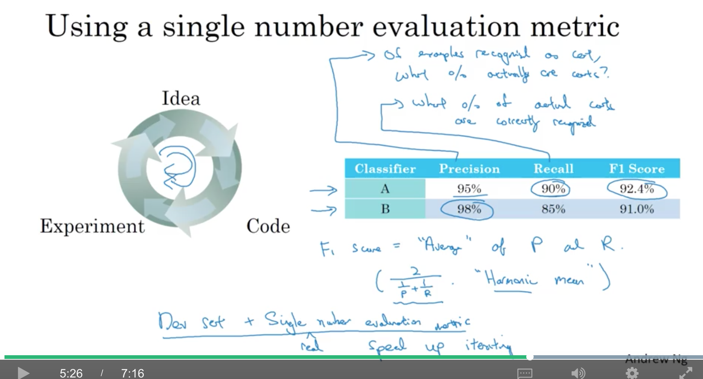

<!DOCTYPE html>
  <html>
    <head>
      <title>c3w1</title>
      <meta charset="utf-8">
      <meta name="viewport" content="width=device-width, initial-scale=1.0">
      
<link rel="stylesheet" href="https://cdn.jsdelivr.net/npm/katex@0.9.0/dist/katex.min.css" integrity="sha384-TEMocfGvRuD1rIAacqrknm5BQZ7W7uWitoih+jMNFXQIbNl16bO8OZmylH/Vi/Ei" crossorigin="anonymous">
      <link rel="stylesheet" href="https://cdn.jsdelivr.net/npm/katex@0.9.0/dist/katex.min.css" integrity="sha384-TEMocfGvRuD1rIAacqrknm5BQZ7W7uWitoih+jMNFXQIbNl16bO8OZmylH/Vi/Ei" crossorigin="anonymous">
      
      
      
      
      
      
      
      
      
      

      <style> 
      /**
 * prism.js Github theme based on GitHub's theme.
 * @author Sam Clarke
 */
code[class*="language-"],
pre[class*="language-"] {
  color: #333;
  background: none;
  font-family: Consolas, "Liberation Mono", Menlo, Courier, monospace;
  text-align: left;
  white-space: pre;
  word-spacing: normal;
  word-break: normal;
  word-wrap: normal;
  line-height: 1.4;

  -moz-tab-size: 8;
  -o-tab-size: 8;
  tab-size: 8;

  -webkit-hyphens: none;
  -moz-hyphens: none;
  -ms-hyphens: none;
  hyphens: none;
}

/* Code blocks */
pre[class*="language-"] {
  padding: .8em;
  overflow: auto;
  /* border: 1px solid #ddd; */
  border-radius: 3px;
  /* background: #fff; */
  background: #f5f5f5;
}

/* Inline code */
:not(pre) > code[class*="language-"] {
  padding: .1em;
  border-radius: .3em;
  white-space: normal;
  background: #f5f5f5;
}

.token.comment,
.token.blockquote {
  color: #969896;
}

.token.cdata {
  color: #183691;
}

.token.doctype,
.token.punctuation,
.token.variable,
.token.macro.property {
  color: #333;
}

.token.operator,
.token.important,
.token.keyword,
.token.rule,
.token.builtin {
  color: #a71d5d;
}

.token.string,
.token.url,
.token.regex,
.token.attr-value {
  color: #183691;
}

.token.property,
.token.number,
.token.boolean,
.token.entity,
.token.atrule,
.token.constant,
.token.symbol,
.token.command,
.token.code {
  color: #0086b3;
}

.token.tag,
.token.selector,
.token.prolog {
  color: #63a35c;
}

.token.function,
.token.namespace,
.token.pseudo-element,
.token.class,
.token.class-name,
.token.pseudo-class,
.token.id,
.token.url-reference .token.variable,
.token.attr-name {
  color: #795da3;
}

.token.entity {
  cursor: help;
}

.token.title,
.token.title .token.punctuation {
  font-weight: bold;
  color: #1d3e81;
}

.token.list {
  color: #ed6a43;
}

.token.inserted {
  background-color: #eaffea;
  color: #55a532;
}

.token.deleted {
  background-color: #ffecec;
  color: #bd2c00;
}

.token.bold {
  font-weight: bold;
}

.token.italic {
  font-style: italic;
}


/* JSON */
.language-json .token.property {
  color: #183691;
}

.language-markup .token.tag .token.punctuation {
  color: #333;
}

/* CSS */
code.language-css,
.language-css .token.function {
  color: #0086b3;
}

/* YAML */
.language-yaml .token.atrule {
  color: #63a35c;
}

code.language-yaml {
  color: #183691;
}

/* Ruby */
.language-ruby .token.function {
  color: #333;
}

/* Markdown */
.language-markdown .token.url {
  color: #795da3;
}

/* Makefile */
.language-makefile .token.symbol {
  color: #795da3;
}

.language-makefile .token.variable {
  color: #183691;
}

.language-makefile .token.builtin {
  color: #0086b3;
}

/* Bash */
.language-bash .token.keyword {
  color: #0086b3;
}html body{font-family:"Helvetica Neue",Helvetica,"Segoe UI",Arial,freesans,sans-serif;font-size:16px;line-height:1.6;color:#333;background-color:#fff;overflow:initial;box-sizing:border-box;word-wrap:break-word}html body>:first-child{margin-top:0}html body h1,html body h2,html body h3,html body h4,html body h5,html body h6{line-height:1.2;margin-top:1em;margin-bottom:16px;color:#000}html body h1{font-size:2.25em;font-weight:300;padding-bottom:.3em}html body h2{font-size:1.75em;font-weight:400;padding-bottom:.3em}html body h3{font-size:1.5em;font-weight:500}html body h4{font-size:1.25em;font-weight:600}html body h5{font-size:1.1em;font-weight:600}html body h6{font-size:1em;font-weight:600}html body h1,html body h2,html body h3,html body h4,html body h5{font-weight:600}html body h5{font-size:1em}html body h6{color:#5c5c5c}html body strong{color:#000}html body del{color:#5c5c5c}html body a:not([href]){color:inherit;text-decoration:none}html body a{color:#08c;text-decoration:none}html body a:hover{color:#00a3f5;text-decoration:none}html body img{max-width:100%}html body>p{margin-top:0;margin-bottom:16px;word-wrap:break-word}html body>ul,html body>ol{margin-bottom:16px}html body ul,html body ol{padding-left:2em}html body ul.no-list,html body ol.no-list{padding:0;list-style-type:none}html body ul ul,html body ul ol,html body ol ol,html body ol ul{margin-top:0;margin-bottom:0}html body li{margin-bottom:0}html body li.task-list-item{list-style:none}html body li>p{margin-top:0;margin-bottom:0}html body .task-list-item-checkbox{margin:0 .2em .25em -1.8em;vertical-align:middle}html body .task-list-item-checkbox:hover{cursor:pointer}html body blockquote{margin:16px 0;font-size:inherit;padding:0 15px;color:#5c5c5c;border-left:4px solid #d6d6d6}html body blockquote>:first-child{margin-top:0}html body blockquote>:last-child{margin-bottom:0}html body hr{height:4px;margin:32px 0;background-color:#d6d6d6;border:0 none}html body table{margin:10px 0 15px 0;border-collapse:collapse;border-spacing:0;display:block;width:100%;overflow:auto;word-break:normal;word-break:keep-all}html body table th{font-weight:bold;color:#000}html body table td,html body table th{border:1px solid #d6d6d6;padding:6px 13px}html body dl{padding:0}html body dl dt{padding:0;margin-top:16px;font-size:1em;font-style:italic;font-weight:bold}html body dl dd{padding:0 16px;margin-bottom:16px}html body code{font-family:Menlo,Monaco,Consolas,'Courier New',monospace;font-size:.85em !important;color:#000;background-color:#f0f0f0;border-radius:3px;padding:.2em 0}html body code::before,html body code::after{letter-spacing:-0.2em;content:"\00a0"}html body pre>code{padding:0;margin:0;font-size:.85em !important;word-break:normal;white-space:pre;background:transparent;border:0}html body .highlight{margin-bottom:16px}html body .highlight pre,html body pre{padding:1em;overflow:auto;font-size:.85em !important;line-height:1.45;border:#d6d6d6;border-radius:3px}html body .highlight pre{margin-bottom:0;word-break:normal}html body pre code,html body pre tt{display:inline;max-width:initial;padding:0;margin:0;overflow:initial;line-height:inherit;word-wrap:normal;background-color:transparent;border:0}html body pre code:before,html body pre tt:before,html body pre code:after,html body pre tt:after{content:normal}html body p,html body blockquote,html body ul,html body ol,html body dl,html body pre{margin-top:0;margin-bottom:16px}html body kbd{color:#000;border:1px solid #d6d6d6;border-bottom:2px solid #c7c7c7;padding:2px 4px;background-color:#f0f0f0;border-radius:3px}@media print{html body{background-color:#fff}html body h1,html body h2,html body h3,html body h4,html body h5,html body h6{color:#000;page-break-after:avoid}html body blockquote{color:#5c5c5c}html body pre{page-break-inside:avoid}html body table{display:table}html body img{display:block;max-width:100%;max-height:100%}html body pre,html body code{word-wrap:break-word;white-space:pre}}.markdown-preview{width:100%;height:100%;box-sizing:border-box}.markdown-preview .pagebreak,.markdown-preview .newpage{page-break-before:always}.markdown-preview pre.line-numbers{position:relative;padding-left:3.8em;counter-reset:linenumber}.markdown-preview pre.line-numbers>code{position:relative}.markdown-preview pre.line-numbers .line-numbers-rows{position:absolute;pointer-events:none;top:1em;font-size:100%;left:0;width:3em;letter-spacing:-1px;border-right:1px solid #999;-webkit-user-select:none;-moz-user-select:none;-ms-user-select:none;user-select:none}.markdown-preview pre.line-numbers .line-numbers-rows>span{pointer-events:none;display:block;counter-increment:linenumber}.markdown-preview pre.line-numbers .line-numbers-rows>span:before{content:counter(linenumber);color:#999;display:block;padding-right:.8em;text-align:right}.markdown-preview .mathjax-exps .MathJax_Display{text-align:center !important}.markdown-preview:not([for="preview"]) .code-chunk .btn-group{display:none}.markdown-preview:not([for="preview"]) .code-chunk .status{display:none}.markdown-preview:not([for="preview"]) .code-chunk .output-div{margin-bottom:16px}.scrollbar-style::-webkit-scrollbar{width:8px}.scrollbar-style::-webkit-scrollbar-track{border-radius:10px;background-color:transparent}.scrollbar-style::-webkit-scrollbar-thumb{border-radius:5px;background-color:rgba(150,150,150,0.66);border:4px solid rgba(150,150,150,0.66);background-clip:content-box}html body[for="html-export"]:not([data-presentation-mode]){position:relative;width:100%;height:100%;top:0;left:0;margin:0;padding:0;overflow:auto}html body[for="html-export"]:not([data-presentation-mode]) .markdown-preview{position:relative;top:0}@media screen and (min-width:914px){html body[for="html-export"]:not([data-presentation-mode]) .markdown-preview{padding:2em calc(50% - 457px)}}@media screen and (max-width:914px){html body[for="html-export"]:not([data-presentation-mode]) .markdown-preview{padding:2em}}@media screen and (max-width:450px){html body[for="html-export"]:not([data-presentation-mode]) .markdown-preview{font-size:14px !important;padding:1em}}@media print{html body[for="html-export"]:not([data-presentation-mode]) #sidebar-toc-btn{display:none}}html body[for="html-export"]:not([data-presentation-mode]) #sidebar-toc-btn{position:fixed;bottom:8px;left:8px;font-size:28px;cursor:pointer;color:inherit;z-index:99;width:32px;text-align:center;opacity:.4}html body[for="html-export"]:not([data-presentation-mode])[html-show-sidebar-toc] #sidebar-toc-btn{opacity:1}html body[for="html-export"]:not([data-presentation-mode])[html-show-sidebar-toc] .md-sidebar-toc{position:fixed;top:0;left:0;width:300px;height:100%;padding:32px 0 48px 0;font-size:14px;box-shadow:0 0 4px rgba(150,150,150,0.33);box-sizing:border-box;overflow:auto;background-color:inherit}html body[for="html-export"]:not([data-presentation-mode])[html-show-sidebar-toc] .md-sidebar-toc::-webkit-scrollbar{width:8px}html body[for="html-export"]:not([data-presentation-mode])[html-show-sidebar-toc] .md-sidebar-toc::-webkit-scrollbar-track{border-radius:10px;background-color:transparent}html body[for="html-export"]:not([data-presentation-mode])[html-show-sidebar-toc] .md-sidebar-toc::-webkit-scrollbar-thumb{border-radius:5px;background-color:rgba(150,150,150,0.66);border:4px solid rgba(150,150,150,0.66);background-clip:content-box}html body[for="html-export"]:not([data-presentation-mode])[html-show-sidebar-toc] .md-sidebar-toc a{text-decoration:none}html body[for="html-export"]:not([data-presentation-mode])[html-show-sidebar-toc] .md-sidebar-toc ul{padding:0 1.6em;margin-top:.8em}html body[for="html-export"]:not([data-presentation-mode])[html-show-sidebar-toc] .md-sidebar-toc li{margin-bottom:.8em}html body[for="html-export"]:not([data-presentation-mode])[html-show-sidebar-toc] .md-sidebar-toc ul{list-style-type:none}html body[for="html-export"]:not([data-presentation-mode])[html-show-sidebar-toc] .markdown-preview{left:300px;width:calc(100% -  300px);padding:2em calc(50% - 457px -  150px);margin:0;box-sizing:border-box}@media screen and (max-width:1274px){html body[for="html-export"]:not([data-presentation-mode])[html-show-sidebar-toc] .markdown-preview{padding:2em}}@media screen and (max-width:450px){html body[for="html-export"]:not([data-presentation-mode])[html-show-sidebar-toc] .markdown-preview{width:100%}}html body[for="html-export"]:not([data-presentation-mode]):not([html-show-sidebar-toc]) .markdown-preview{left:50%;transform:translateX(-50%)}html body[for="html-export"]:not([data-presentation-mode]):not([html-show-sidebar-toc]) .md-sidebar-toc{display:none}
/* Please visit the URL below for more information: */
/*   https://shd101wyy.github.io/markdown-preview-enhanced/#/customize-css */
 
      </style>
    </head>
    <body for="html-export">
      <div class="mume markdown-preview   ">
      <p>contents</p>
<ul>
<li><a href="#1-introduction-to-ml-strategy">1. introduction to ml strategy</a>
<ul>
<li><a href="#11-why-ml-strategy">1.1. why ml strategy</a></li>
<li><a href="#12-orthogonalization">1.2. orthogonalization</a></li>
</ul>
</li>
<li><a href="#2-setting-up-your-goal">2. setting up your goal</a>
<ul>
<li><a href="#21-single-number-evaluation-metric">2.1. single number evaluation metric</a></li>
<li><a href="#22-satisficing-and-optimizing-metric">2.2. satisficing and optimizing metric</a></li>
<li><a href="#23-traindevtest-distributions">2.3. train/dev/test distributions</a></li>
<li><a href="#24-size-of-the-dev-and-test-sets">2.4. size of the dev and test sets</a></li>
<li><a href="#25-when-to-change-devtest-sets-and-metrics">2.5. when to change dev/test sets and metrics</a></li>
</ul>
</li>
<li><a href="#3-comparing-to-human-level-performance">3. comparing to human-level performance</a>
<ul>
<li><a href="#31-why-human-level-performance">3.1. why human-level performance?</a></li>
<li><a href="#32-avoidable-bias">3.2. avoidable bias</a></li>
<li><a href="#33-understanding-human-level-performance">3.3. understanding human-level performance</a></li>
<li><a href="#34-surpassing-human-level-performance">3.4. surpassing human-level performance</a></li>
<li><a href="#35-improving-your-model-performance">3.5. improving your model performance</a></li>
</ul>
</li>
</ul>
<h1 class="mume-header" id="1-introduction-to-ml-strategy">1. introduction to ml strategy</h1>

<h2 class="mume-header" id="11-why-ml-strategy">1.1. why ml strategy</h2>

<p>在训练好一个网络后，往往有很多想尝试的改进（如下），ml strategy会帮忙给出意见，哪些值得尝试，哪些可以直接放弃</p>
<p></p>
<h2 class="mume-header" id="12-orthogonalization">1.2. orthogonalization</h2>

<p>orthogonalization(正交化)，例如，电视机上有很多个旋钮，每个旋钮只做一件事（夹角90度），而且每件事是『可解释的』。如果有一个东西是可以同时做多件事的（例如，一个摇杆，可能同时控制方向和速度），这样就很难在每件事情上都随心所欲。</p>
<p>ml的几个阶段需要优化cost function在：</p>
<ul>
<li>训练集的表现：增大网络、使用其他优化算法（Adam等）…</li>
<li>验证集的表现：正则化、更大的训练集</li>
<li>测试集的表现：更大的验证集</li>
<li>真实世界的表现：修改验证集（因为可能是验证集或者测试集的分布和现实世界不一样）、修改cost function</li>
</ul>
<p>上面四个阶段的优化最好是各自正交的，这样就不会因为改变一个而另一个也被改变了，从而找不到真正的问题。</p>
<p>训练神经网络时，不太喜欢用early stopping，因为这种方法会同时影响训练集和验证集，不够『正交』</p>
<p></p>
<h1 class="mume-header" id="2-setting-up-your-goal">2. setting up your goal</h1>

<h2 class="mume-header" id="21-single-number-evaluation-metric">2.1. single number evaluation metric</h2>

<p>准确：在所有预测为猫的结果中，有多少是预测对的：<span class="katex"><span class="katex-mathml"><math><semantics><mrow><mi>P</mi><mo>=</mo><mfrac><mrow><mi>T</mi><mi>P</mi></mrow><mrow><mi>T</mi><mi>P</mi><mo>+</mo><mi>F</mi><mi>P</mi></mrow></mfrac></mrow><annotation encoding="application/x-tex">P=\frac{TP}{TP+FP}</annotation></semantics></math></span><span class="katex-html" aria-hidden="true"><span class="strut" style="height:0.872331em;"></span><span class="strut bottom" style="height:1.275662em;vertical-align:-0.403331em;"></span><span class="base"><span class="mord mathit" style="margin-right:0.13889em;">P</span><span class="mord rule" style="margin-right:0.2777777777777778em;"></span><span class="mrel">=</span><span class="mord rule" style="margin-right:0.2777777777777778em;"></span><span class="mord"><span class="mopen nulldelimiter"></span><span class="mfrac"><span class="vlist-t vlist-t2"><span class="vlist-r"><span class="vlist" style="height:0.872331em;"><span style="top:-2.655em;"><span class="pstrut" style="height:3em;"></span><span class="sizing reset-size6 size3 mtight"><span class="mord mtight"><span class="mord mathit mtight" style="margin-right:0.13889em;">T</span><span class="mord mathit mtight" style="margin-right:0.13889em;">P</span><span class="mbin mtight">+</span><span class="mord mathit mtight" style="margin-right:0.13889em;">F</span><span class="mord mathit mtight" style="margin-right:0.13889em;">P</span></span></span></span><span style="top:-3.15em;"><span class="pstrut" style="height:3em;"></span><span class="stretchy" style="height:0.2em;"><svg width="400em" height="0.2em" viewBox="0 0 400000 200" preserveAspectRatio="xMinYMin slice"><path d="M0 80H400000 v40H0z M0 80H400000 v40H0z"></path></svg></span></span><span style="top:-3.394em;"><span class="pstrut" style="height:3em;"></span><span class="sizing reset-size6 size3 mtight"><span class="mord mtight"><span class="mord mathit mtight" style="margin-right:0.13889em;">T</span><span class="mord mathit mtight" style="margin-right:0.13889em;">P</span></span></span></span></span><span class="vlist-s">​</span></span><span class="vlist-r"><span class="vlist" style="height:0.403331em;"></span></span></span></span><span class="mclose nulldelimiter"></span></span></span></span></span><br>
召回：在所有的猫中，我预测出来了多少个：<span class="katex"><span class="katex-mathml"><math><semantics><mrow><mi>R</mi><mo>=</mo><mfrac><mrow><mi>T</mi><mi>P</mi></mrow><mrow><mi>T</mi><mi>P</mi><mo>+</mo><mi>F</mi><mi>N</mi></mrow></mfrac></mrow><annotation encoding="application/x-tex">R=\frac{TP}{TP+FN}</annotation></semantics></math></span><span class="katex-html" aria-hidden="true"><span class="strut" style="height:0.872331em;"></span><span class="strut bottom" style="height:1.275662em;vertical-align:-0.403331em;"></span><span class="base"><span class="mord mathit" style="margin-right:0.00773em;">R</span><span class="mord rule" style="margin-right:0.2777777777777778em;"></span><span class="mrel">=</span><span class="mord rule" style="margin-right:0.2777777777777778em;"></span><span class="mord"><span class="mopen nulldelimiter"></span><span class="mfrac"><span class="vlist-t vlist-t2"><span class="vlist-r"><span class="vlist" style="height:0.872331em;"><span style="top:-2.655em;"><span class="pstrut" style="height:3em;"></span><span class="sizing reset-size6 size3 mtight"><span class="mord mtight"><span class="mord mathit mtight" style="margin-right:0.13889em;">T</span><span class="mord mathit mtight" style="margin-right:0.13889em;">P</span><span class="mbin mtight">+</span><span class="mord mathit mtight" style="margin-right:0.13889em;">F</span><span class="mord mathit mtight" style="margin-right:0.10903em;">N</span></span></span></span><span style="top:-3.15em;"><span class="pstrut" style="height:3em;"></span><span class="stretchy" style="height:0.2em;"><svg width="400em" height="0.2em" viewBox="0 0 400000 200" preserveAspectRatio="xMinYMin slice"><path d="M0 80H400000 v40H0z M0 80H400000 v40H0z"></path></svg></span></span><span style="top:-3.394em;"><span class="pstrut" style="height:3em;"></span><span class="sizing reset-size6 size3 mtight"><span class="mord mtight"><span class="mord mathit mtight" style="margin-right:0.13889em;">T</span><span class="mord mathit mtight" style="margin-right:0.13889em;">P</span></span></span></span></span><span class="vlist-s">​</span></span><span class="vlist-r"><span class="vlist" style="height:0.403331em;"></span></span></span></span><span class="mclose nulldelimiter"></span></span></span></span></span></p>
<p>如果我们的评价指标有precision和recall这两个，那其实比较难从多个分类器中选出一个比较好的，因此，最好有一个指标可以把recall和precision结合起来——F1（P和R的调和平均【harmonic mean】<span class="katex"><span class="katex-mathml"><math><semantics><mrow><mi>F</mi><mn>1</mn><mo>=</mo><mfrac><mrow><mn>2</mn></mrow><mrow><mfrac><mrow><mn>1</mn></mrow><mrow><mi>P</mi></mrow></mfrac><mo>+</mo><mfrac><mrow><mn>1</mn></mrow><mrow><mi>R</mi></mrow></mfrac></mrow></mfrac></mrow><annotation encoding="application/x-tex">F1=\frac{2}{\frac{1}{P}+\frac{1}{R}}</annotation></semantics></math></span><span class="katex-html" aria-hidden="true"><span class="strut" style="height:0.845108em;"></span><span class="strut bottom" style="height:1.4869279999999998em;vertical-align:-0.64182em;"></span><span class="base"><span class="mord mathit" style="margin-right:0.13889em;">F</span><span class="mord">1</span><span class="mord rule" style="margin-right:0.2777777777777778em;"></span><span class="mrel">=</span><span class="mord rule" style="margin-right:0.2777777777777778em;"></span><span class="mord"><span class="mopen nulldelimiter"></span><span class="mfrac"><span class="vlist-t vlist-t2"><span class="vlist-r"><span class="vlist" style="height:0.845108em;"><span style="top:-2.59898em;"><span class="pstrut" style="height:3em;"></span><span class="sizing reset-size6 size3 mtight"><span class="mord mtight"><span class="mord mtight"><span class="mopen nulldelimiter sizing reset-size3 size6"></span><span class="mfrac"><span class="vlist-t vlist-t2"><span class="vlist-r"><span class="vlist" style="height:0.8443142857142858em;"><span style="top:-2.656em;"><span class="pstrut" style="height:3em;"></span><span class="sizing reset-size3 size1 mtight"><span class="mord mtight"><span class="mord mathit mtight" style="margin-right:0.13889em;">P</span></span></span></span><span style="top:-3.1275em;"><span class="pstrut" style="height:3em;"></span><span class="stretchy mtight" style="height:0.245em;"><svg width="400em" height="0.245em" viewBox="0 0 400000 200" preserveAspectRatio="xMinYMin slice"><path d="M0 80H400000 v40H0z M0 80H400000 v40H0z"></path></svg></span></span><span style="top:-3.384em;"><span class="pstrut" style="height:3em;"></span><span class="sizing reset-size3 size1 mtight"><span class="mord mtight"><span class="mord mtight">1</span></span></span></span></span><span class="vlist-s">​</span></span><span class="vlist-r"><span class="vlist" style="height:0.344em;"></span></span></span></span><span class="mclose nulldelimiter sizing reset-size3 size6"></span></span><span class="mbin mtight">+</span><span class="mord mtight"><span class="mopen nulldelimiter sizing reset-size3 size6"></span><span class="mfrac"><span class="vlist-t vlist-t2"><span class="vlist-r"><span class="vlist" style="height:0.8443142857142858em;"><span style="top:-2.656em;"><span class="pstrut" style="height:3em;"></span><span class="sizing reset-size3 size1 mtight"><span class="mord mtight"><span class="mord mathit mtight" style="margin-right:0.00773em;">R</span></span></span></span><span style="top:-3.1275em;"><span class="pstrut" style="height:3em;"></span><span class="stretchy mtight" style="height:0.245em;"><svg width="400em" height="0.245em" viewBox="0 0 400000 200" preserveAspectRatio="xMinYMin slice"><path d="M0 80H400000 v40H0z M0 80H400000 v40H0z"></path></svg></span></span><span style="top:-3.384em;"><span class="pstrut" style="height:3em;"></span><span class="sizing reset-size3 size1 mtight"><span class="mord mtight"><span class="mord mtight">1</span></span></span></span></span><span class="vlist-s">​</span></span><span class="vlist-r"><span class="vlist" style="height:0.344em;"></span></span></span></span><span class="mclose nulldelimiter sizing reset-size3 size6"></span></span></span></span></span><span style="top:-3.15em;"><span class="pstrut" style="height:3em;"></span><span class="stretchy" style="height:0.2em;"><svg width="400em" height="0.2em" viewBox="0 0 400000 200" preserveAspectRatio="xMinYMin slice"><path d="M0 80H400000 v40H0z M0 80H400000 v40H0z"></path></svg></span></span><span style="top:-3.394em;"><span class="pstrut" style="height:3em;"></span><span class="sizing reset-size6 size3 mtight"><span class="mord mtight"><span class="mord mtight">2</span></span></span></span></span><span class="vlist-s">​</span></span><span class="vlist-r"><span class="vlist" style="height:0.64182em;"></span></span></span></span><span class="mclose nulldelimiter"></span></span></span></span></span>）</p>
<p>所以，实践中，往往使用验证集+单一的实数评价指标，可以加速实验的迭代。</p>
<p></p>
<h2 class="mume-header" id="22-satisficing-and-optimizing-metric">2.2. satisficing and optimizing metric</h2>

<p>图中的accuracy是optimizing metric，而runningTime是satisficing metric（不是那么重要），<br>
期望runningTime&lt;100ms时得到最大的accuracy。</p>
<p>所以，如果有N个metrics，期望找到1个optimizing metric，剩下的N-1个是satisficing metric。</p>
<p>另一个场景，希望识别出唤醒的语音（例如，『hey siri』『你好百度』），目标可能就是：maximize accuracy， subject to 每24小时内的false positive数&lt;=1。</p>
<p></p>
<h2 class="mume-header" id="23-traindevtest-distributions">2.3. train/dev/test distributions</h2>

<p>保证dev和test set的数据分布一致（例如将所有数据打乱，然后随机选一些dev，一些test，都覆盖了所有分类类型）</p>
<p>总的来说，<strong>验证集+评估指标决定了需要瞄准的目标</strong>，而<strong>训练集决定了能够击中目标的精度</strong>。</p>
<h2 class="mume-header" id="24-size-of-the-dev-and-test-sets">2.4. size of the dev and test sets</h2>

<p>传统方法(万级别及以下的数据规模)：</p>
<ul>
<li>train:test=7:3</li>
<li>train:dev:test=6:2:2</li>
</ul>
<p>百万级别以上的数据规模：</p>
<ul>
<li>train:dev:test=98:1:1</li>
</ul>
<p>测试集的size：</p>
<ul>
<li>对最终的performance要求非常高的场景：上百万的样本</li>
<li>对最终的performance要求很高的场景：1w/10w的样本就可以了</li>
<li>对最终的performance要求不高的场景：可以不要测试集（例如有一个足够大的验证集并且不会过拟合的时候），不过不推荐这种做法</li>
</ul>
<h2 class="mume-header" id="25-when-to-change-devtest-sets-and-metrics">2.5. when to change dev/test sets and metrics</h2>

<p>有时，在项目的进行过程中，会发现实际的目标和当初设定的不太一样，这个时候就需要改变一下目标。</p>
<p>例如，分类器a的分类error只有3%，但会把一些违法图片也分类为猫。分类器b的分类error有5%，但不会把违法图片分类为猫。这个时候就应该改变，例如,新增一个w来改变error的定义：</p>
<p><span class="katex-display"><span class="katex"><span class="katex-mathml"><math><semantics><mrow><mtable><mtr><mtd><mstyle scriptlevel="0" displaystyle="false"><mrow></mrow></mstyle></mtd></mtr><mtr><mtd><mstyle scriptlevel="0" displaystyle="false"><mrow><mi>e</mi><mi>r</mi><mi>r</mi><mi>o</mi><mi>r</mi><mo>=</mo><mfrac><mrow><mn>1</mn></mrow><mrow><msub><mi>m</mi><mrow><mi>d</mi><mi>e</mi><mi>v</mi></mrow></msub></mrow></mfrac><msubsup><mo>∑</mo><mrow><mi>i</mi><mo>=</mo><mn>1</mn></mrow><msub><mi>m</mi><mrow><mi>d</mi><mi>e</mi><mi>v</mi></mrow></msub></msubsup><msup><mi>w</mi><mrow><mo>(</mo><mi>i</mi><mo>)</mo></mrow></msup><mi>I</mi><mo>(</mo><msubsup><mi>y</mi><mrow><mi>p</mi><mi>r</mi><mi>e</mi><mi>d</mi></mrow><mrow><mo>(</mo><mi>i</mi><mo>)</mo></mrow></msubsup><mo>≠</mo><msup><mi>y</mi><mrow><mo>(</mo><mi>i</mi><mo>)</mo></mrow></msup><mo>)</mo></mrow></mstyle></mtd></mtr><mtr><mtd><mstyle scriptlevel="0" displaystyle="false"><mrow><msup><mi>w</mi><mrow><mo>(</mo><mi>i</mi><mo>)</mo></mrow></msup><mo>=</mo><mrow><mo fence="true">{</mo><mtable><mtr><mtd><mstyle scriptlevel="0" displaystyle="false"><mrow><mn>1</mn><mo separator="true">,</mo><mi>i</mi><mi>f</mi><mtext> </mtext><msup><mi>x</mi><mrow><mo>(</mo><mi>i</mi><mo>)</mo></mrow></msup><mtext> </mtext><mi>i</mi><mi>s</mi><mtext> </mtext><mi>l</mi><mi>e</mi><mi>g</mi><mi>a</mi><mi>l</mi></mrow></mstyle></mtd></mtr><mtr><mtd><mstyle scriptlevel="0" displaystyle="false"><mrow><mn>1</mn><mn>0</mn><mn>0</mn><mo separator="true">,</mo><mi>i</mi><mi>f</mi><mtext> </mtext><msup><mi>x</mi><mrow><mo>(</mo><mi>i</mi><mo>)</mo></mrow></msup><mtext> </mtext><mi>i</mi><mi>s</mi><mtext> </mtext><mi>i</mi><mi>l</mi><mi>l</mi><mi>e</mi><mi>g</mi><mi>a</mi><mi>l</mi></mrow></mstyle></mtd></mtr></mtable></mrow></mrow></mstyle></mtd></mtr></mtable></mrow><annotation encoding="application/x-tex">\begin{matrix}
\\ error=\frac{1}{m_{dev}}\sum _{i=1}^{m_{dev}}w^{(i)}I(y_{pred}^{(i)}\neq y^{(i)}) 
\\ w^{(i)}=\left\{\begin{matrix}
1,if\ x^{(i)}\ is\ legal \\ 100,if\ x^{(i)}\ is\ illegal
\end{matrix}\right.
\end{matrix}</annotation></semantics></math></span><span class="katex-html" aria-hidden="true"><span class="strut" style="height:2.8458300000000003em;"></span><span class="strut bottom" style="height:5.191660000000001em;vertical-align:-2.3458300000000007em;"></span><span class="base"><span class="mord"><span class="mtable"><span class="col-align-c"><span class="vlist-t vlist-t2"><span class="vlist-r"><span class="vlist" style="height:2.8458300000000003em;"><span style="top:-5.503830000000001em;"><span class="pstrut" style="height:3.498em;"></span><span class="mord"></span></span><span style="top:-4.09903em;"><span class="pstrut" style="height:3.498em;"></span><span class="mord"><span class="mord mathit">e</span><span class="mord mathit" style="margin-right:0.02778em;">r</span><span class="mord mathit" style="margin-right:0.02778em;">r</span><span class="mord mathit">o</span><span class="mord mathit" style="margin-right:0.02778em;">r</span><span class="mord rule" style="margin-right:0.2777777777777778em;"></span><span class="mrel">=</span><span class="mord rule" style="margin-right:0.2777777777777778em;"></span><span class="mord"><span class="mopen nulldelimiter"></span><span class="mfrac"><span class="vlist-t vlist-t2"><span class="vlist-r"><span class="vlist" style="height:0.845108em;"><span style="top:-2.655em;"><span class="pstrut" style="height:3em;"></span><span class="sizing reset-size6 size3 mtight"><span class="mord mtight"><span class="mord mtight"><span class="mord mathit mtight">m</span><span class="msupsub"><span class="vlist-t vlist-t2"><span class="vlist-r"><span class="vlist" style="height:0.3448em;"><span style="top:-2.3487714285714287em;margin-left:0em;margin-right:0.07142857142857144em;"><span class="pstrut" style="height:2.5em;"></span><span class="sizing reset-size3 size1 mtight"><span class="mord mtight"><span class="mord mathit mtight">d</span><span class="mord mathit mtight">e</span><span class="mord mathit mtight" style="margin-right:0.03588em;">v</span></span></span></span></span><span class="vlist-s">​</span></span><span class="vlist-r"><span class="vlist" style="height:0.15122857142857138em;"></span></span></span></span></span></span></span></span><span style="top:-3.15em;"><span class="pstrut" style="height:3em;"></span><span class="stretchy" style="height:0.2em;"><svg width="400em" height="0.2em" viewBox="0 0 400000 200" preserveAspectRatio="xMinYMin slice"><path d="M0 80H400000 v40H0z M0 80H400000 v40H0z"></path></svg></span></span><span style="top:-3.394em;"><span class="pstrut" style="height:3em;"></span><span class="sizing reset-size6 size3 mtight"><span class="mord mtight"><span class="mord mtight">1</span></span></span></span></span><span class="vlist-s">​</span></span><span class="vlist-r"><span class="vlist" style="height:0.4508599999999999em;"></span></span></span></span><span class="mclose nulldelimiter"></span></span><span class="mord rule" style="margin-right:0.16666666666666666em;"></span><span class="mop"><span class="mop op-symbol small-op" style="position:relative;top:-0.0000050000000000050004em;">∑</span><span class="msupsub"><span class="vlist-t vlist-t2"><span class="vlist-r"><span class="vlist" style="height:0.804292em;"><span style="top:-2.40029em;margin-left:0em;margin-right:0.05em;"><span class="pstrut" style="height:2.7em;"></span><span class="sizing reset-size6 size3 mtight"><span class="mord mtight"><span class="mord mathit mtight">i</span><span class="mrel mtight">=</span><span class="mord mtight">1</span></span></span></span><span style="top:-3.2029em;margin-right:0.05em;"><span class="pstrut" style="height:2.7em;"></span><span class="sizing reset-size6 size3 mtight"><span class="mord mtight"><span class="mord mtight"><span class="mord mathit mtight">m</span><span class="msupsub"><span class="vlist-t vlist-t2"><span class="vlist-r"><span class="vlist" style="height:0.3448em;"><span style="top:-2.3487714285714287em;margin-left:0em;margin-right:0.07142857142857144em;"><span class="pstrut" style="height:2.5em;"></span><span class="sizing reset-size3 size1 mtight"><span class="mord mtight"><span class="mord mathit mtight">d</span><span class="mord mathit mtight">e</span><span class="mord mathit mtight" style="margin-right:0.03588em;">v</span></span></span></span></span><span class="vlist-s">​</span></span><span class="vlist-r"><span class="vlist" style="height:0.15122857142857138em;"></span></span></span></span></span></span></span></span></span><span class="vlist-s">​</span></span><span class="vlist-r"><span class="vlist" style="height:0.29971000000000003em;"></span></span></span></span></span><span class="mord rule" style="margin-right:0.16666666666666666em;"></span><span class="mord"><span class="mord mathit" style="margin-right:0.02691em;">w</span><span class="msupsub"><span class="vlist-t"><span class="vlist-r"><span class="vlist" style="height:0.8879999999999999em;"><span style="top:-3.063em;margin-right:0.05em;"><span class="pstrut" style="height:2.7em;"></span><span class="sizing reset-size6 size3 mtight"><span class="mord mtight"><span class="mopen mtight">(</span><span class="mord mathit mtight">i</span><span class="mclose mtight">)</span></span></span></span></span></span></span></span></span><span class="mord mathit" style="margin-right:0.07847em;">I</span><span class="mopen">(</span><span class="mord"><span class="mord mathit" style="margin-right:0.03588em;">y</span><span class="msupsub"><span class="vlist-t vlist-t2"><span class="vlist-r"><span class="vlist" style="height:1.0448em;"><span style="top:-2.3986920000000005em;margin-left:-0.03588em;margin-right:0.05em;"><span class="pstrut" style="height:2.7em;"></span><span class="sizing reset-size6 size3 mtight"><span class="mord mtight"><span class="mord mathit mtight">p</span><span class="mord mathit mtight" style="margin-right:0.02778em;">r</span><span class="mord mathit mtight">e</span><span class="mord mathit mtight">d</span></span></span></span><span style="top:-3.2198em;margin-right:0.05em;"><span class="pstrut" style="height:2.7em;"></span><span class="sizing reset-size6 size3 mtight"><span class="mord mtight"><span class="mopen mtight">(</span><span class="mord mathit mtight">i</span><span class="mclose mtight">)</span></span></span></span></span><span class="vlist-s">​</span></span><span class="vlist-r"><span class="vlist" style="height:0.4374159999999999em;"></span></span></span></span></span><span class="mord rule" style="margin-right:0.2777777777777778em;"></span><span class="mrel">≠</span><span class="mord rule" style="margin-right:0.2777777777777778em;"></span><span class="mord"><span class="mord mathit" style="margin-right:0.03588em;">y</span><span class="msupsub"><span class="vlist-t"><span class="vlist-r"><span class="vlist" style="height:0.8879999999999999em;"><span style="top:-3.063em;margin-right:0.05em;"><span class="pstrut" style="height:2.7em;"></span><span class="sizing reset-size6 size3 mtight"><span class="mord mtight"><span class="mopen mtight">(</span><span class="mord mathit mtight">i</span><span class="mclose mtight">)</span></span></span></span></span></span></span></span></span><span class="mclose">)</span></span></span><span style="top:-2.15017em;"><span class="pstrut" style="height:3.498em;"></span><span class="mord"><span class="mord"><span class="mord mathit" style="margin-right:0.02691em;">w</span><span class="msupsub"><span class="vlist-t"><span class="vlist-r"><span class="vlist" style="height:0.8879999999999999em;"><span style="top:-3.063em;margin-right:0.05em;"><span class="pstrut" style="height:2.7em;"></span><span class="sizing reset-size6 size3 mtight"><span class="mord mtight"><span class="mopen mtight">(</span><span class="mord mathit mtight">i</span><span class="mclose mtight">)</span></span></span></span></span></span></span></span></span><span class="mord rule" style="margin-right:0.2777777777777778em;"></span><span class="mrel">=</span><span class="mord rule" style="margin-right:0.2777777777777778em;"></span><span class="minner"><span class="mopen delimcenter" style="top:0em;"><span class="delimsizing size3">{</span></span><span class="mord"><span class="mtable"><span class="col-align-c"><span class="vlist-t vlist-t2"><span class="vlist-r"><span class="vlist" style="height:1.498em;"><span style="top:-3.61em;"><span class="pstrut" style="height:3em;"></span><span class="mord"><span class="mord">1</span><span class="mpunct">,</span><span class="mord rule" style="margin-right:0.16666666666666666em;"></span><span class="mord mathit">i</span><span class="mord mathit" style="margin-right:0.10764em;">f</span><span class="mspace"> </span><span class="mord"><span class="mord mathit">x</span><span class="msupsub"><span class="vlist-t"><span class="vlist-r"><span class="vlist" style="height:0.8879999999999999em;"><span style="top:-3.063em;margin-right:0.05em;"><span class="pstrut" style="height:2.7em;"></span><span class="sizing reset-size6 size3 mtight"><span class="mord mtight"><span class="mopen mtight">(</span><span class="mord mathit mtight">i</span><span class="mclose mtight">)</span></span></span></span></span></span></span></span></span><span class="mspace"> </span><span class="mord mathit">i</span><span class="mord mathit">s</span><span class="mspace"> </span><span class="mord mathit" style="margin-right:0.01968em;">l</span><span class="mord mathit">e</span><span class="mord mathit" style="margin-right:0.03588em;">g</span><span class="mord mathit">a</span><span class="mord mathit" style="margin-right:0.01968em;">l</span></span></span><span style="top:-2.3619999999999997em;"><span class="pstrut" style="height:3em;"></span><span class="mord"><span class="mord">1</span><span class="mord">0</span><span class="mord">0</span><span class="mpunct">,</span><span class="mord rule" style="margin-right:0.16666666666666666em;"></span><span class="mord mathit">i</span><span class="mord mathit" style="margin-right:0.10764em;">f</span><span class="mspace"> </span><span class="mord"><span class="mord mathit">x</span><span class="msupsub"><span class="vlist-t"><span class="vlist-r"><span class="vlist" style="height:0.8879999999999999em;"><span style="top:-3.063em;margin-right:0.05em;"><span class="pstrut" style="height:2.7em;"></span><span class="sizing reset-size6 size3 mtight"><span class="mord mtight"><span class="mopen mtight">(</span><span class="mord mathit mtight">i</span><span class="mclose mtight">)</span></span></span></span></span></span></span></span></span><span class="mspace"> </span><span class="mord mathit">i</span><span class="mord mathit">s</span><span class="mspace"> </span><span class="mord mathit">i</span><span class="mord mathit" style="margin-right:0.01968em;">l</span><span class="mord mathit" style="margin-right:0.01968em;">l</span><span class="mord mathit">e</span><span class="mord mathit" style="margin-right:0.03588em;">g</span><span class="mord mathit">a</span><span class="mord mathit" style="margin-right:0.01968em;">l</span></span></span></span><span class="vlist-s">​</span></span><span class="vlist-r"><span class="vlist" style="height:0.9980000000000004em;"></span></span></span></span></span></span><span class="mclose nulldelimiter"></span></span></span></span></span><span class="vlist-s">​</span></span><span class="vlist-r"><span class="vlist" style="height:2.3458300000000007em;"></span></span></span></span></span></span></span></span></span></span></p>
<p>而为了保证error是在0-1之间的，要把<span class="katex"><span class="katex-mathml"><math><semantics><mrow><mfrac><mrow><mn>1</mn></mrow><mrow><msub><mi>m</mi><mrow><mi>d</mi><mi>e</mi><mi>v</mi></mrow></msub></mrow></mfrac></mrow><annotation encoding="application/x-tex">\frac{1}{m_{dev}}</annotation></semantics></math></span><span class="katex-html" aria-hidden="true"><span class="strut" style="height:0.845108em;"></span><span class="strut bottom" style="height:1.2959679999999998em;vertical-align:-0.4508599999999999em;"></span><span class="base"><span class="mord"><span class="mopen nulldelimiter"></span><span class="mfrac"><span class="vlist-t vlist-t2"><span class="vlist-r"><span class="vlist" style="height:0.845108em;"><span style="top:-2.655em;"><span class="pstrut" style="height:3em;"></span><span class="sizing reset-size6 size3 mtight"><span class="mord mtight"><span class="mord mtight"><span class="mord mathit mtight">m</span><span class="msupsub"><span class="vlist-t vlist-t2"><span class="vlist-r"><span class="vlist" style="height:0.3448em;"><span style="top:-2.3487714285714287em;margin-left:0em;margin-right:0.07142857142857144em;"><span class="pstrut" style="height:2.5em;"></span><span class="sizing reset-size3 size1 mtight"><span class="mord mtight"><span class="mord mathit mtight">d</span><span class="mord mathit mtight">e</span><span class="mord mathit mtight" style="margin-right:0.03588em;">v</span></span></span></span></span><span class="vlist-s">​</span></span><span class="vlist-r"><span class="vlist" style="height:0.15122857142857138em;"></span></span></span></span></span></span></span></span><span style="top:-3.15em;"><span class="pstrut" style="height:3em;"></span><span class="stretchy" style="height:0.2em;"><svg width="400em" height="0.2em" viewBox="0 0 400000 200" preserveAspectRatio="xMinYMin slice"><path d="M0 80H400000 v40H0z M0 80H400000 v40H0z"></path></svg></span></span><span style="top:-3.394em;"><span class="pstrut" style="height:3em;"></span><span class="sizing reset-size6 size3 mtight"><span class="mord mtight"><span class="mord mtight">1</span></span></span></span></span><span class="vlist-s">​</span></span><span class="vlist-r"><span class="vlist" style="height:0.4508599999999999em;"></span></span></span></span><span class="mclose nulldelimiter"></span></span></span></span></span>改成<span class="katex"><span class="katex-mathml"><math><semantics><mrow><mfrac><mrow><mn>1</mn></mrow><mrow><msub><mo>∑</mo><mi>i</mi></msub><mrow><msub><mi>w</mi><mi>i</mi></msub></mrow></mrow></mfrac></mrow><annotation encoding="application/x-tex">\frac{1}{\sum_i{w_i}}</annotation></semantics></math></span><span class="katex-html" aria-hidden="true"><span class="strut" style="height:0.845108em;"></span><span class="strut bottom" style="height:1.415115em;vertical-align:-0.5700069999999999em;"></span><span class="base"><span class="mord"><span class="mopen nulldelimiter"></span><span class="mfrac"><span class="vlist-t vlist-t2"><span class="vlist-r"><span class="vlist" style="height:0.845108em;"><span style="top:-2.6550000000000002em;"><span class="pstrut" style="height:3em;"></span><span class="sizing reset-size6 size3 mtight"><span class="mord mtight"><span class="mop mtight"><span class="mop op-symbol small-op mtight" style="position:relative;top:-0.0000050000000000050004em;">∑</span><span class="msupsub"><span class="vlist-t vlist-t2"><span class="vlist-r"><span class="vlist" style="height:0.1496471428571428em;"><span style="top:-2.1785614285714283em;margin-left:0em;margin-right:0.07142857142857144em;"><span class="pstrut" style="height:2.5em;"></span><span class="sizing reset-size3 size1 mtight"><span class="mord mathit mtight">i</span></span></span></span><span class="vlist-s">​</span></span><span class="vlist-r"><span class="vlist" style="height:0.32143857142857146em;"></span></span></span></span></span><span class="mord rule mtight" style="margin-right:0.19516666666666668em;"></span><span class="mord mtight"><span class="mord mtight"><span class="mord mathit mtight" style="margin-right:0.02691em;">w</span><span class="msupsub"><span class="vlist-t vlist-t2"><span class="vlist-r"><span class="vlist" style="height:0.3280857142857143em;"><span style="top:-2.357em;margin-left:-0.02691em;margin-right:0.07142857142857144em;"><span class="pstrut" style="height:2.5em;"></span><span class="sizing reset-size3 size1 mtight"><span class="mord mathit mtight">i</span></span></span></span><span class="vlist-s">​</span></span><span class="vlist-r"><span class="vlist" style="height:0.143em;"></span></span></span></span></span></span></span></span></span><span style="top:-3.15em;"><span class="pstrut" style="height:3em;"></span><span class="stretchy" style="height:0.2em;"><svg width="400em" height="0.2em" viewBox="0 0 400000 200" preserveAspectRatio="xMinYMin slice"><path d="M0 80H400000 v40H0z M0 80H400000 v40H0z"></path></svg></span></span><span style="top:-3.394em;"><span class="pstrut" style="height:3em;"></span><span class="sizing reset-size6 size3 mtight"><span class="mord mtight"><span class="mord mtight">1</span></span></span></span></span><span class="vlist-s">​</span></span><span class="vlist-r"><span class="vlist" style="height:0.5700069999999999em;"></span></span></span></span><span class="mclose nulldelimiter"></span></span></span></span></span></p>
<p>正交化的思想：</p>
<ul>
<li>放置靶子</li>
<li>瞄准和射击</li>
</ul>
<p>这两个步骤是相互独立的，单独地进行</p>
<p>另一个例子，验证和测试时，用的是网上下载的高清图，a的error是3%，b的error是5%，<br>
而上线使用时，用户上传的图片往往清晰度比较差，或者拍摄角度比较奇怪，可能b的表现反而更好。<br>
这个时候，也需要改变，例如，修改dev和test集，加入更多的非高清图。</p>
<h1 class="mume-header" id="3-comparing-to-human-level-performance">3. comparing to human-level performance</h1>

<h2 class="mume-header" id="31-why-human-level-performance">3.1. why human-level performance?</h2>

<p>将机器的表现和人的表现进行比较，有个理论上界是Bayes Optimal Error(最小的理论误差)，一般准确率不会达到100%</p>
<p>模型往往会用很快在速度达到或者超越了人类的表现，但之后追赶bayes optimal error的速度却比较缓慢，主要有以下两个原因：</p>
<ul>
<li>人类的表现其实已经很接近bayes optimal error了</li>
<li>当水平还达不到人类的表现时，有很工具可以来优化，但超越人类表现后，就很难有工具再来提高了</li>
</ul>
<p>当水平达不到人类表现时的提高方法：</p>
<ul>
<li>拿到更多人工标注数据</li>
<li>人工分析错误的case</li>
<li>对bias/variance进行分析</li>
</ul>
<h2 class="mume-header" id="32-avoidable-bias">3.2. avoidable bias</h2>

<ul>
<li>当人类的error是1%，train-error是8%，dev-error是10%是，focus on 减小bias（例如更大的网络，或者更长的训练时间）</li>
<li>当人类的error是7.5%，train-error是8%，dev-error是10%是，focus on 减小variance（例如正则化，或者拿到更多的训练样本）</li>
</ul>
<p>在cv领域，可以把人类的表现，当做贝叶斯最优误差的近似(即，estimate或称为proxy)，因为人类在这些任务上表现得已经足够好</p>
<p>可以将bayes error和train error间的差距称做可避免偏差（avoidable bias），而train error和dev error的差距是variance。</p>
<h2 class="mume-header" id="33-understanding-human-level-performance">3.3. understanding human-level performance</h2>

<p>注意：常将human-level error当做bayes error的proxy，所以在如下情况中，如果想要打造一个最好的系统，会拿0.5%当做human-level error。</p>
<p>而如果只是为了发paper，或者只要能推出一个系统就行了，那么，可以把1%当做human-level error。</p>
<p></p>
<h2 class="mume-header" id="34-surpassing-human-level-performance">3.4. surpassing human-level performance</h2>

<p>当human-level error是0.5%，train-error是0.3%，dev-error是0.4%时，可见模型已经『超越』人类了，但不能确定是过拟合了，而且也很难通过提供更多人工标注数据来改进。</p>
<p>在以下几个任务中，机器已经大大超越人类了：</p>
<ul>
<li>在线广告</li>
<li>产品推荐</li>
<li>物流（预测物流时间）</li>
<li>是否借贷</li>
</ul>
<p>上述问题都有大量的结构化数据，不是自然感知（Natural Perception）问题，而且机器见过的数据肯定比一个人见过的多，所以容易超越人类</p>
<h2 class="mume-header" id="35-improving-your-model-performance">3.5. improving your model performance</h2>

<p>监督学习中两件最fundemental的事：</p>
<ul>
<li>很好地拟合训练集（很低的avoidable error）
<ul>
<li>训练更大的模型</li>
<li>训练更久/用更好的优化方法</li>
<li>变换网络结构/搜索更好的超参</li>
</ul>
</li>
<li>训练集的性能可以很好的推广到dev/test set（低的variance）
<ul>
<li>更多的数据</li>
<li>正则化（L2、dropout、数据增强）</li>
<li>变换网络结构/搜索更好的超参</li>
</ul>
</li>
</ul>

      </div>
      <div class="md-sidebar-toc"><ul>
<li><a href="#1-introduction-to-ml-strategy">1. introduction to ml strategy</a>
<ul>
<li><a href="#11-why-ml-strategy">1.1. why ml strategy</a></li>
<li><a href="#12-orthogonalization">1.2. orthogonalization</a></li>
</ul>
</li>
<li><a href="#2-setting-up-your-goal">2. setting up your goal</a>
<ul>
<li><a href="#21-single-number-evaluation-metric">2.1. single number evaluation metric</a></li>
<li><a href="#22-satisficing-and-optimizing-metric">2.2. satisficing and optimizing metric</a></li>
<li><a href="#23-traindevtest-distributions">2.3. train/dev/test distributions</a></li>
<li><a href="#24-size-of-the-dev-and-test-sets">2.4. size of the dev and test sets</a></li>
<li><a href="#25-when-to-change-devtest-sets-and-metrics">2.5. when to change dev/test sets and metrics</a></li>
</ul>
</li>
<li><a href="#3-comparing-to-human-level-performance">3. comparing to human-level performance</a>
<ul>
<li><a href="#31-why-human-level-performance">3.1. why human-level performance?</a></li>
<li><a href="#32-avoidable-bias">3.2. avoidable bias</a></li>
<li><a href="#33-understanding-human-level-performance">3.3. understanding human-level performance</a></li>
<li><a href="#34-surpassing-human-level-performance">3.4. surpassing human-level performance</a></li>
<li><a href="#35-improving-your-model-performance">3.5. improving your model performance</a></li>
</ul>
</li>
</ul>
</div>
      <a id="sidebar-toc-btn">≡</a>
    </body>
    
    
    
    
    
    
    <script>
(function bindTaskListEvent() {
  var taskListItemCheckboxes = document.body.getElementsByClassName('task-list-item-checkbox')
  for (var i = 0; i < taskListItemCheckboxes.length; i++) {
    var checkbox = taskListItemCheckboxes[i]
    var li = checkbox.parentElement
    if (li.tagName !== 'LI') li = li.parentElement
    if (li.tagName === 'LI') {
      li.classList.add('task-list-item')
    }
  }
}())    
</script>
    
<script>

var sidebarTOCBtn = document.getElementById('sidebar-toc-btn')
sidebarTOCBtn.addEventListener('click', function(event) {
  event.stopPropagation()
  if (document.body.hasAttribute('html-show-sidebar-toc')) {
    document.body.removeAttribute('html-show-sidebar-toc')
  } else {
    document.body.setAttribute('html-show-sidebar-toc', true)
  }
})
</script>
      
  </html>
